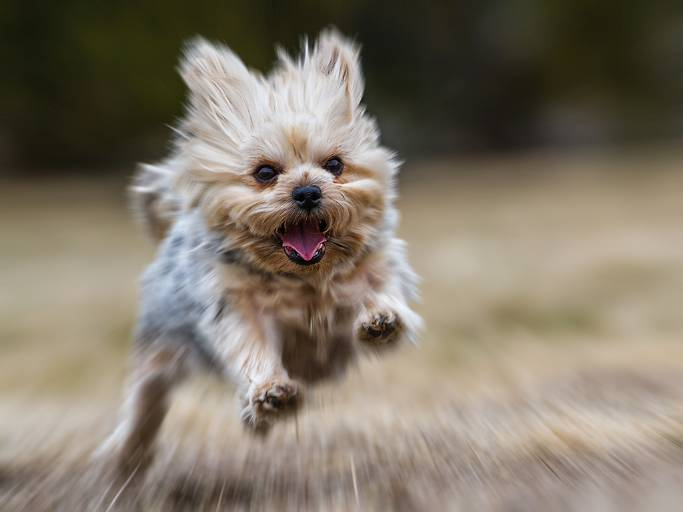

| Subject: Digital technique radial blur |
| From: Peter Christoph <crosstone@hotmail.com> |
| Date: 3/28/2014 9:22 AM |
Open your photo and size it to competition size.
Duplicate the layer by choosing "Duplicate" from the Layers menu.
Make sure the duplicate layer is selected and then go to the Filter menu and choose Blur...Radial.
In the dialog box which pops up, choose:
Amount = 17 (I have found this to be a good starting point, but use whatever number you like...)
Blur method = Zoom
Quality = Best
Apply the filter twice in a row if you like.
Inside the Blur Center window, you must click and drag to reposition the focal point, or "blur center" to your liking.

...............................................................
Peter Christoph
Photographer/Speaker/Author
978.549.4812